Review · Round 6 · the chapters · the whole film
Chapter 9: Pure Force, the draft
The latest draft, acted and painted, 5:09 at 12 drawings a second, over the same sound as the storyboard. One place, the rock round the plant, and one long night into dawn. The first globe is white and the beam that kills it runs red, orange, green; the golden sphere comes up with the sun.
Notes: pause anywhere, type, and press Enter (or Pin) to pin a note to that moment. They stay in this browser. Copy notes puts them on the clipboard as text, timed and with their shot, for the decision sheet or a message.
Notes
The shots
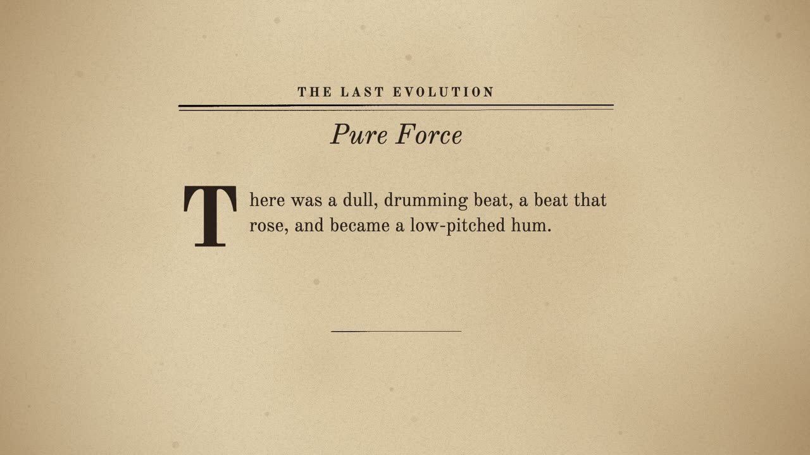
A The chapter's page 0:00–0:06
seenThe pulp page, Pure Force, the opening words under a drop cap.
cameraa slow push
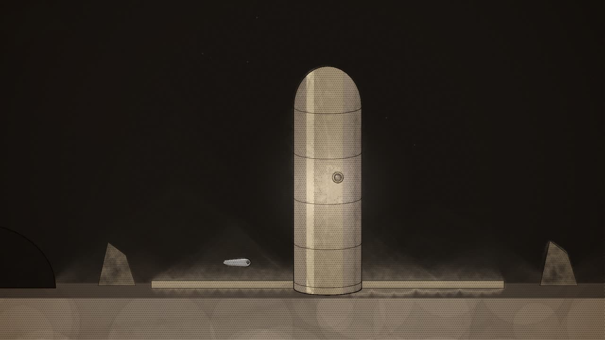
B The drumming beat 0:06–0:17
seenThe power plant at night under its crescent moon, F-2 at its foot.
cameraa slow push toward the plant
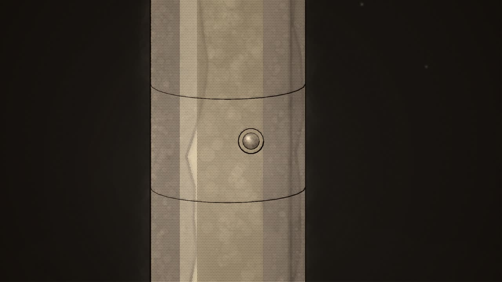
C Power ready 0:17–0:24
seenThe small brain's lens in the plant's wall.
cameraup to the lens
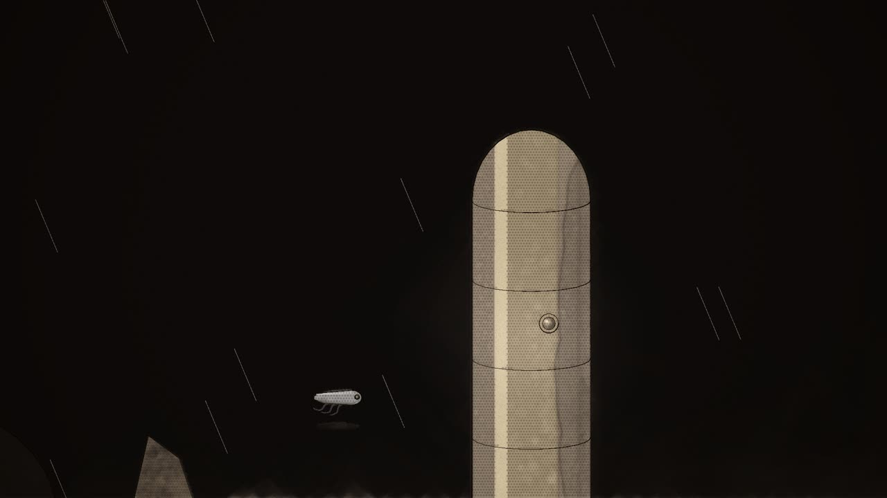
D The storm rises 0:24–0:53
seenHeavy clouds gathering over the plant; F-2 small in the wind.
camerapulls back as the sky darkens
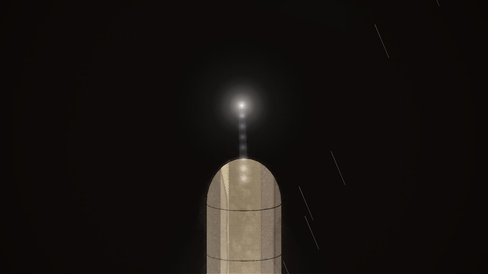
E The volcano of energy 0:53–1:28
seenDriving rain; lightning jabbing at the centre of the storm above the plant, where a tiny ball of white force pulses.
cameraup into the storm's centre
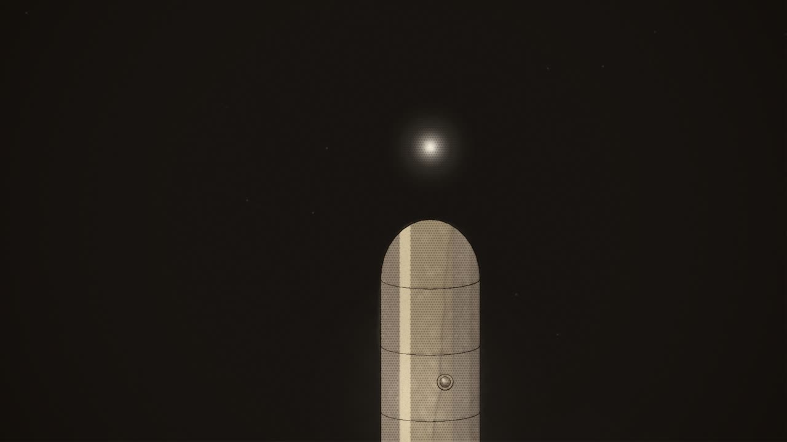
F The globe 1:28–1:45
seenThe storm gone; a small globe of white light floating above the plant.
cameraholds
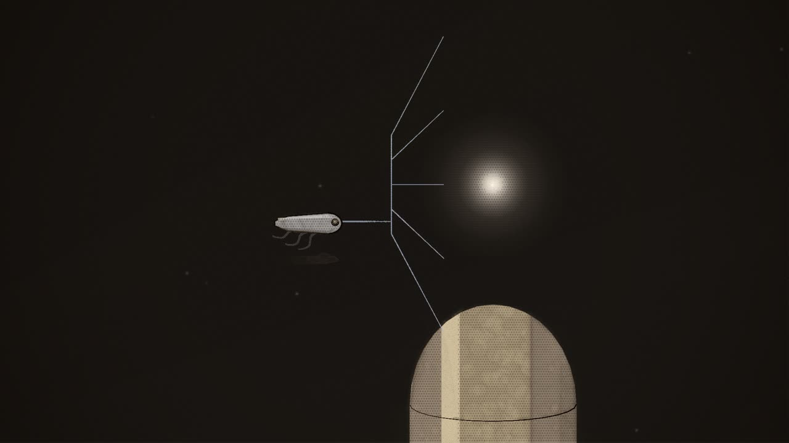
G Probing 1:45–2:10
seenF-2 before the globe.
cameraon the two of them
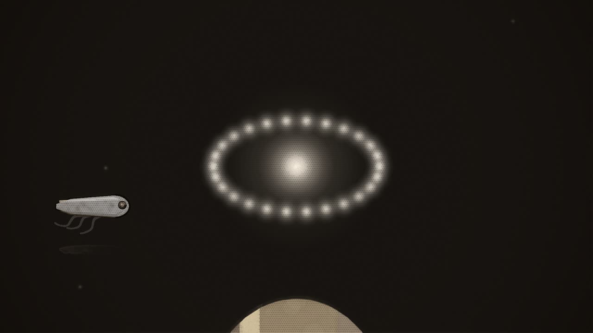
H Inefficient 2:10–2:19
seenThe globe.
cameracloser on the globe
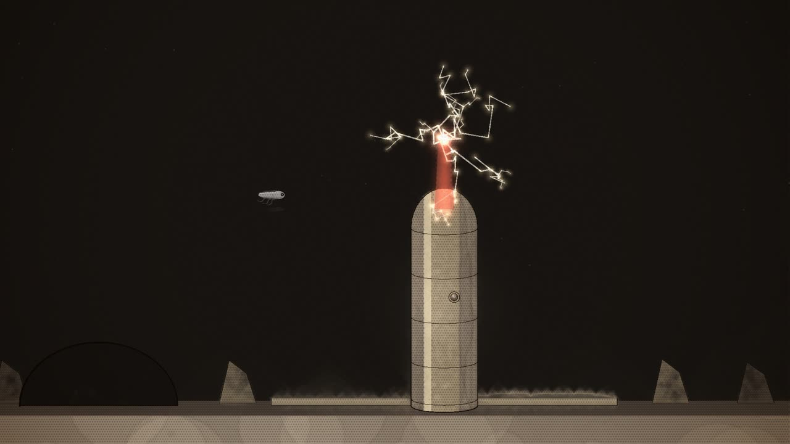
I The red beam 2:19–2:55
seenThe globe, F-2, the plant.
camerapulls back to hold the plant, the beam and the globe
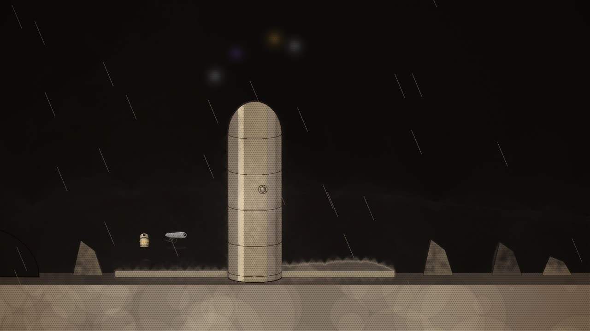
J Again, at sunrise 2:55–3:18
seenThe storm again; C-R-U-1 floating in beside F-2, its name glowing gold; behind them a red sun rising through the clouds.
cameraa slow move round so the sunrise is behind them
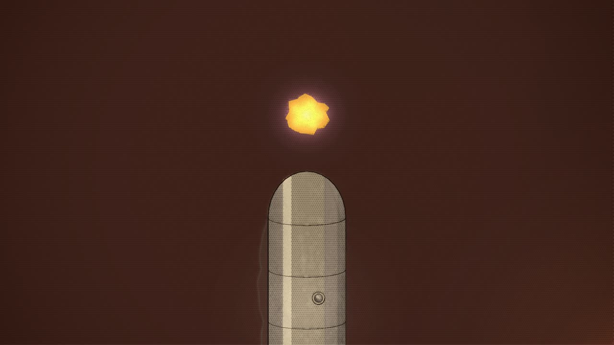
K The golden sphere 3:18–3:57
seenThe black dome parting; Roal and Trest coming out of it; above the plant, an irregular globe of golden light with a halo of deep violet.
camerafrom the men up to the sphere
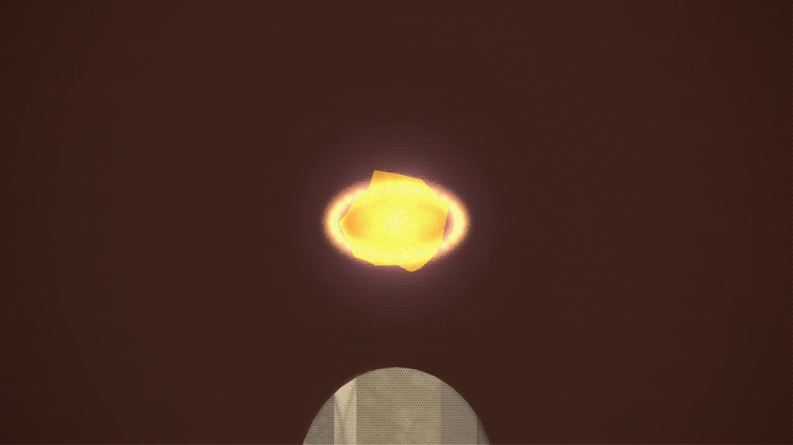
L I grow now 3:57–4:08
seenThe golden sphere, the watchers small below.
cameraclose on the sphere
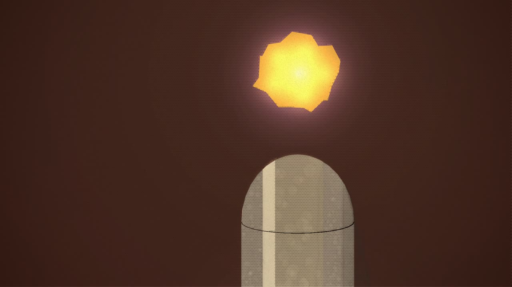
M The ruby flame 4:08–4:29
seenThe sphere, a tiny ruby flame within it.
camerafrom the sphere down to the men and machines bathed in it
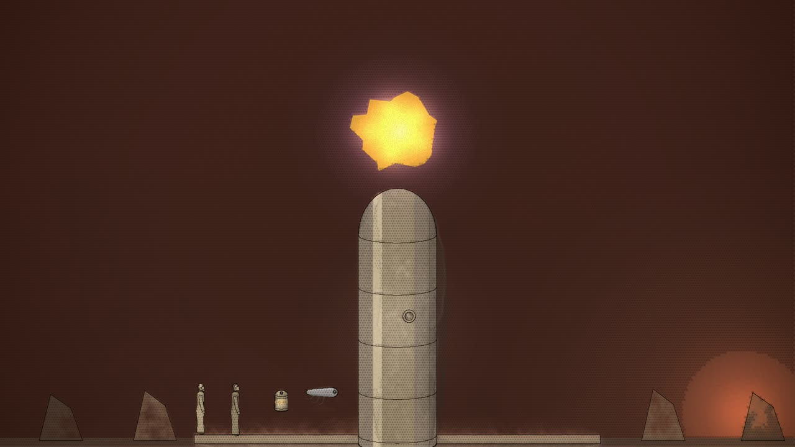
N Twice its size 4:29–4:45
seenThe sphere, grown.
camerapulls back to show it against the plant
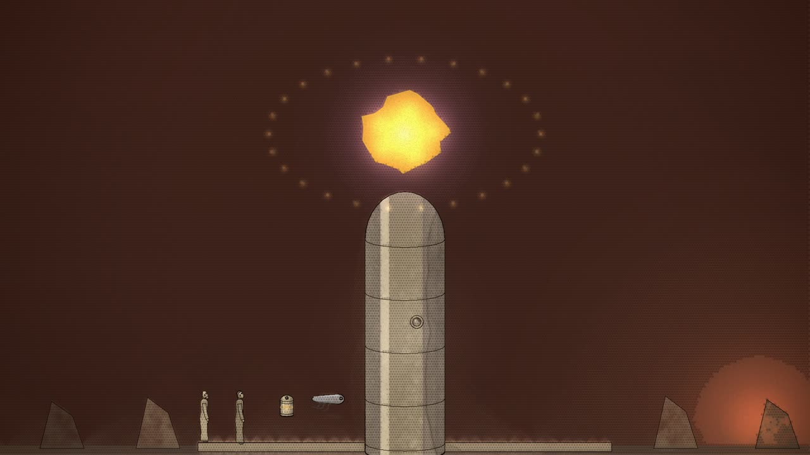
O They shall return 4:45–5:00
seenThe sphere above the watchers.
cameraholds
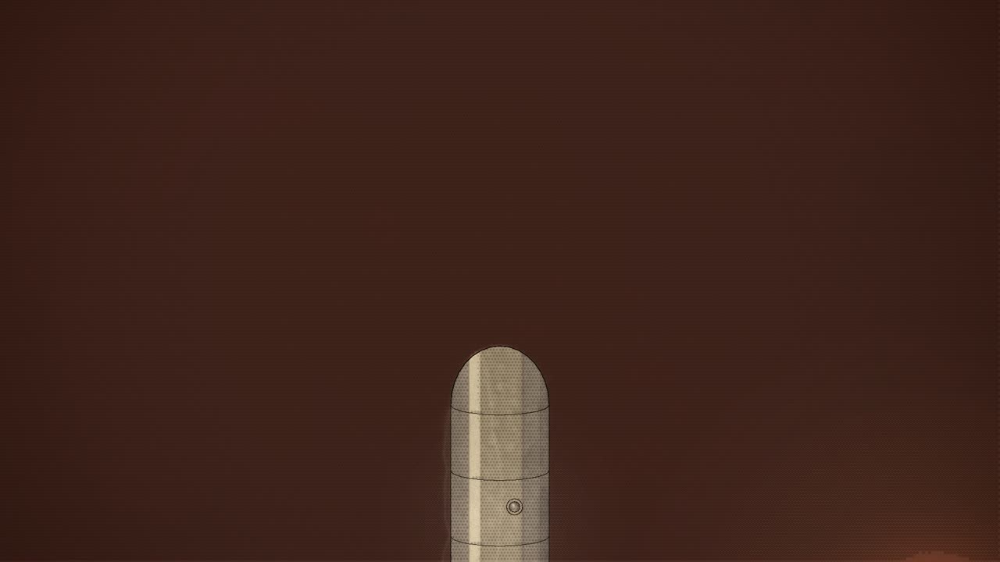
P Gone 5:00–5:09
seenThe sphere.
cameraholds the empty sky